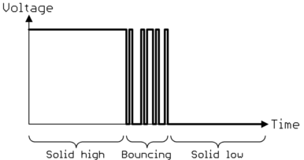

Debouncen
Een schakelaar is een mechanisch onderdeel. Daardoor kan bij het sluiten van de verbinding een fenomeen optreden dat contactdender heet (in het Engels "bouncing"). Op het moment dat het contact van de schakelaar verbinding maakt met het andere contact van de schakelaar, kan het gebeuren dat de contacten even denderen, en er dus een opeenvolging van toestanden is waarbij de verbinding gemaakt en verbroken wordt.

De dender zichtbaar maken
Onderstaande sketch telt hoe vaak je op de knop drukt, en gaat ervan uit dat één overgang van hoog naar laag één druk is. Dat is de gewone manier om een druk te detecteren.
Laad ze op, open de seriële monitor en druk tien keer rustig op de knop.
const int knopPin = 2;
int vorigeStand = HIGH;
int aantalDrukken = 0;
void setup()
{
pinMode(knopPin, INPUT_PULLUP);
Serial.begin(9600);
}
void loop()
{
int stand = digitalRead(knopPin);
if (stand == LOW && vorigeStand == HIGH)
{
aantalDrukken++;
Serial.println(aantalDrukken);
}
vorigeStand = stand;
}De teller staat daarna meestal hoger dan 10, en bij sommige drukken springt hij twee of drie tellen vooruit. Tel opnieuw en je komt op een ander totaal uit.
Tijdens de milliseconden dat de contacten denderen, gaat de ingang meerdere keren van hoog naar laag en terug. Je code doet precies wat er staat: ze telt elke overgang, en voor jouw ene druk zijn dat er meerdere geweest. Hoeveel er dat zijn, hangt af van de knop en van hoe je duwt, en verschilt van druk tot druk.

Debouncen met een korte pauze
Dit is een ongewenst fenomeen. We willen een perfecte overgang tussen het ene niveau en het andere niveau. Om dat te bereiken kan je het signaal "debouncen", met andere woorden het denderen van de contacten tegenwerken.
Het denderen zelf gebeurt in een fractie van een seconde. De duur ervan zal altijd minder zijn dan een tiende van een seconde, meestal zelfs nog korter. Een mogelijke debounce-oplossing is dan ook om het ingangssignaal te "pollen" (= constant na elkaar uitlezen) en, zodra een ander niveau gedetecteerd is, een pauze in het pollen in te lassen van 50 ms. Na deze pauze is het denderen zeker voorbij en kan de nu stabiele ingang gelezen worden. Dit heeft wel de beperking dat het signaal niet sneller dan binnen 50 ms mag wisselen.
In deze cursus staat de ontdendertijd bij het pollen overal op 50 ms. Dat is ruim meer dan de paar milliseconden dat een knop echt dendert, en tegelijk kort genoeg dat twee drukken na elkaar allebei nog meetellen. Kies je 200 ms, dan werkt het ontdenderen even goed, maar begint je knop traag aan te voelen.
const int knopPin = 2;
const unsigned long ontdenderTijd = 50;
void setup()
{
pinMode(knopPin, INPUT_PULLUP);
}
void loop()
{
if (digitalRead(knopPin) == LOW)
{
// do something
delay(ontdenderTijd); // debounce
}
}Een tweede mogelijkheid is het gebruik van een externe schakeling zoals een flipflop. Zie daarvoor de cursus "digitale elektronica" uit het eerste jaar.
Debouncen zonder te blokkeren
Bovenstaande code is een heel eenvoudige manier om het debounceprobleem op te lossen, maar ze heeft een belangrijk nadeel: het gebruik van delay(). Die functie blokkeert de Arduino volledig, zodat er geen andere instructie meer uitgevoerd wordt. Wil je dat niet omdat de uitvoering van je programma tijdskritisch is, dan kan je onderstaande oplossing gebruiken. Deze kan je ook terugvinden in de Arduino-documentatie.
const int knopPin = 2;
const unsigned long ontdenderTijd = 50;
int vorigeMeting = HIGH;
int knopStand = HIGH;
unsigned long laatsteVerandering = 0;
void setup()
{
pinMode(knopPin, INPUT_PULLUP);
}
void loop()
{
int meting = digitalRead(knopPin);
if (meting != vorigeMeting)
{
laatsteVerandering = millis(); // toestand veranderde -> timer resetten
}
if (millis() - laatsteVerandering > ontdenderTijd)
{
if (meting != knopStand)
{
knopStand = meting;
if (knopStand == LOW)
{
// do something -> vuurt exact één keer per druk
}
}
}
vorigeMeting = meting;
}